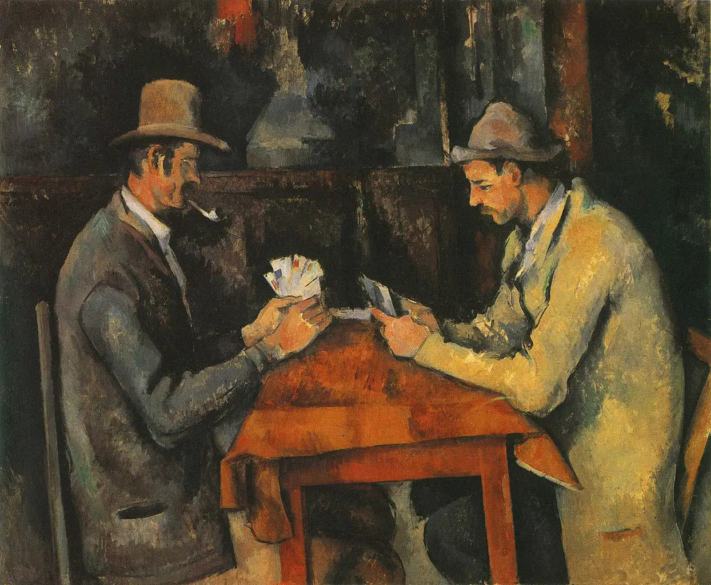
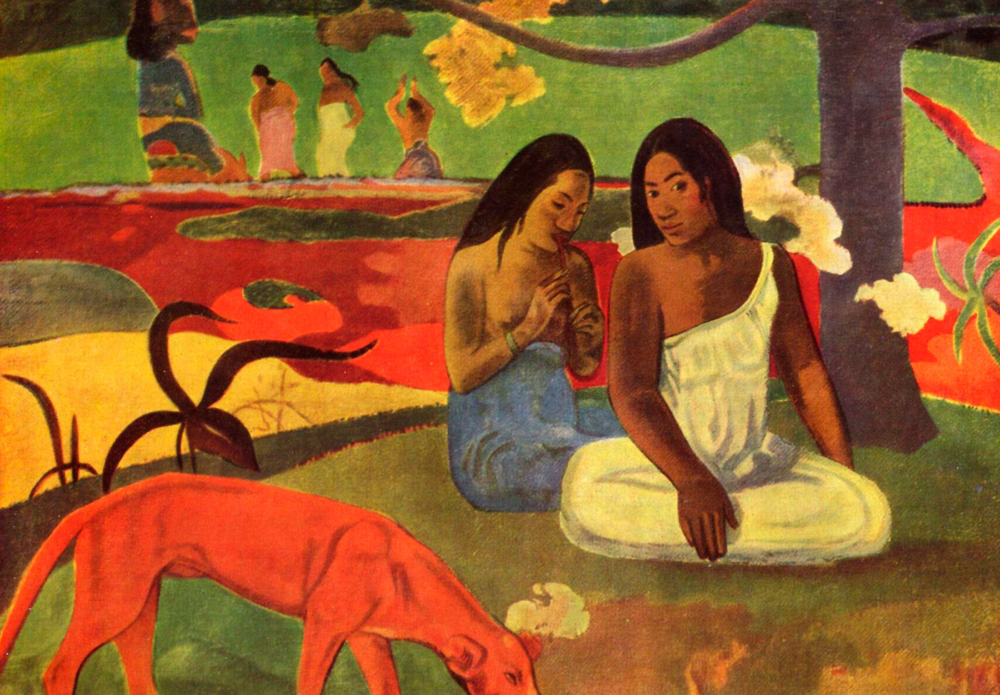
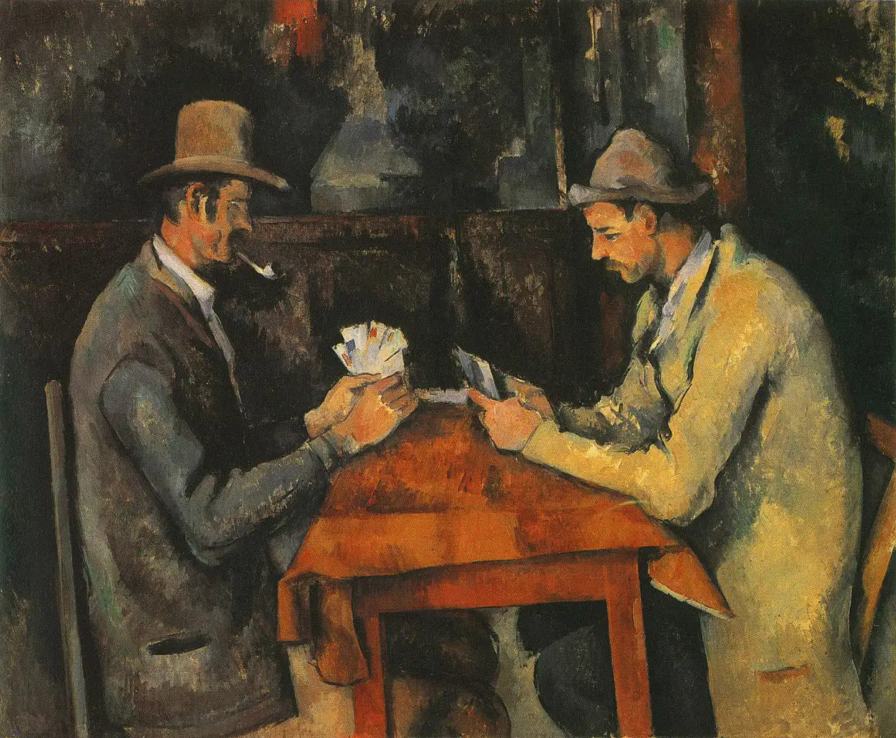
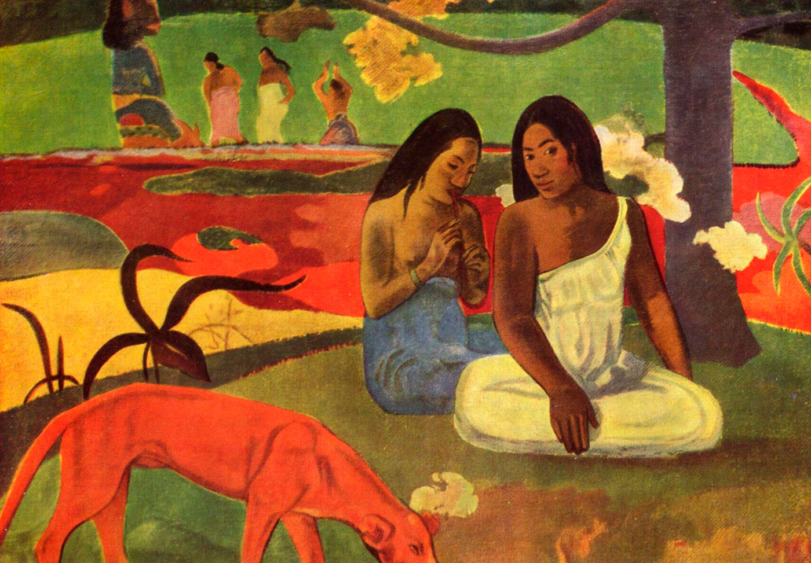

Introducción
El Posimpresionismo fue un movimiento artístico que surgió en la última parte del siglo XIX como una evolución del Impresionismo. Se caracterizó por un enfoque más subjetivo y una mayor exploración de la forma y el color.
Características del Posimpresionismo
- Uso de colores vibrantes y llamativos.
- Énfasis en la estructura y el simbolismo.
- Exploración de la emoción y la subjetividad en la pintura.
- Influencia en movimientos posteriores como el Expresionismo y el Fauvismo.
Artistas Destacados
- Vincent van Gogh: Conocido por su estilo expresivo y pinceladas gruesas.
- Paul Cézanne: Considerado un precursor del Cubismo debido a su enfoque geométrico.
- Paul Gauguin: Introdujo el uso del simbolismo y la espiritualidad en su obra.
Galería
 


